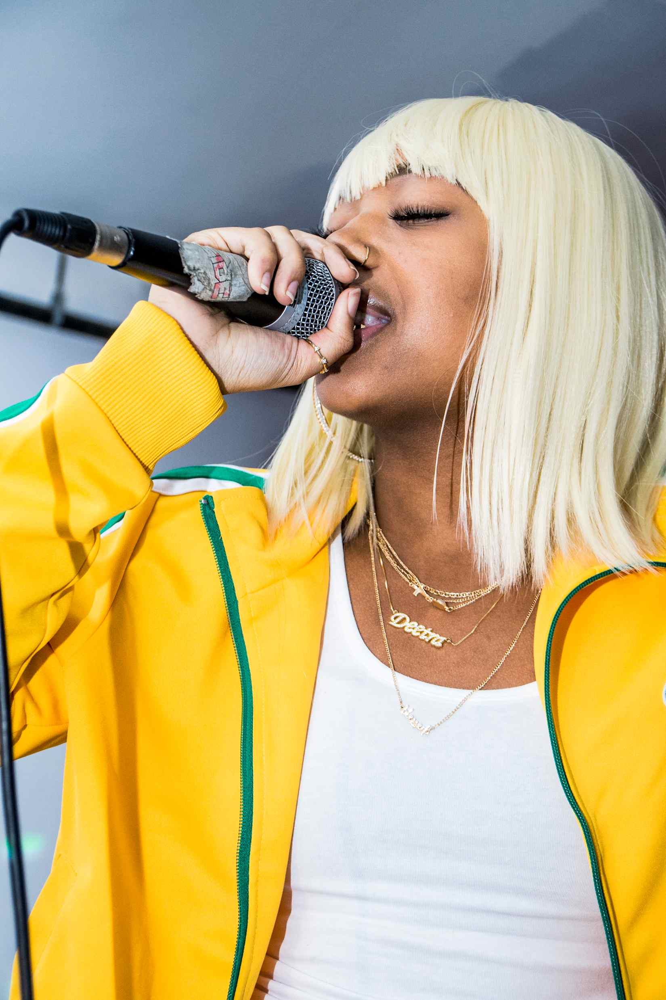

deetranada
222____
born
in Baltimore
life path 7
Deetranada is a moonchild sun and summer moon who raps,
On my life, on the sun and the moon, I came out wit' a boom, the best in the room
Pop quiz
Her Venus is comfortably in Taurus.
which house would you guess her Venus is placed in?
Uranus was Aries when her 2017 album adolescence swim came out.
Uranus was near her Venus during lockdown when 222bars and
Nadaworld came out.
Neptune was station in her 2021 solar return.
Born as Diamond Barmer,
she chose Deetranada as her artist name.
That's 63 verse 37 in
name numerology
Tweet @starinterface your opinions :)
We have only guesses about her birth time ;)

Deetranada performs Flat Out
photo © Shan Wallace via Red Bull
lol like Taurus